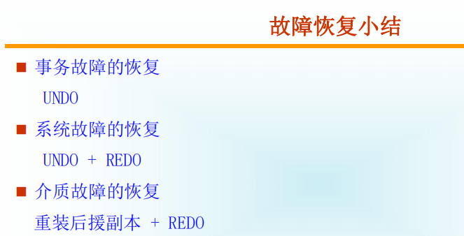
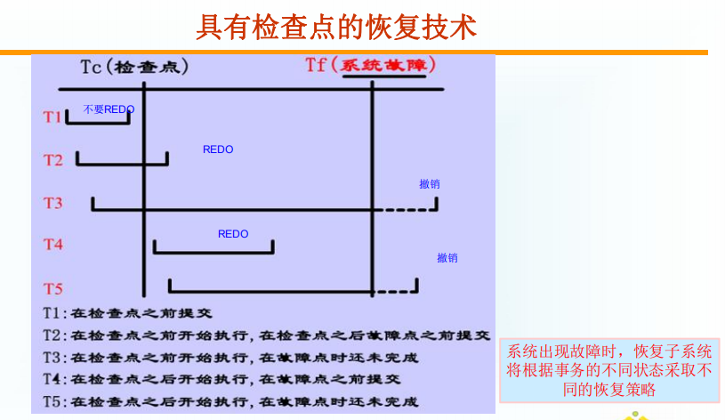

title: 数据库系统概述第十章
tags:
- ‘笔记’
- ‘’
categories: - ‘笔记’
- ‘数据库系统概述’
date: 2023-05-22 22:22:43
数据库系统第十章
[TOC]
10.1 事物的基本概念
所谓事物使用户定义的一个数据操作序列，这些操作要么全做，要么全不做，是一个不可分割的工作单位，是恢复和并发控制的基本单位
定义事物的语句
1 | BEGIN TRANSACTION |
事物的特性
-
原子性
-
一致性
-
隔离性
-
持续性
10.2 数据库恢复的概述
数据库管理系统必须具有把数据库从错误状态恢复到某一已知的正确状态(亦称为一致状态或完整状态)的功能，这就是数据库的恢复管理系统对故障的对策
10.3 故障的种类
-
事物内部的故障
-
系统故障
-
介质故障
-
计算机病毒
10.4 恢复的实现技术
如何建立冗余数据
-
数据转储
-
登录日志文件
10.4.1 数据转储
数据转储：数据转储是指DBA（数据库管理员）定期将整个数据库复制到磁带或另一个磁盘上保存起来的过程。这些备用的数据文本称为后备副本或后援副本。
说明：要想恢复到故障发生时的状态，必须重新运行自转储以后的所有更新事务。
转储的方法
-
静态转出与动态转储
静态转储：
优点：实现简单
缺点：降低数据库可用性
动态转储：
优点：
不用等待正在运行的用户事务结束
不会影响新事务的运行
缺点：
不能保证副本中数据的正确有效
-
海量转储与增量转储
10.4.2 登记日志文件
日志文件的格式：
-
以记录为单位的日志文件
-
以数据块为单位的日志文件
登记日志文件时必须要遵循两条原则
-
登记的次序严格按并行事物执行的时间次序
-
必须先写日志文件，后写数据库
10.5 恢复策略
10.5.1 事务故障的恢复
事物故障的恢复步骤
-
反向扫描文件日志(即从最后向前扫描日志文件)，查找该事务的更新操作。
-
对该事务的更新操作执行逆操作。即将日志记录中“更新前的值” 写入数据库。
-
.继续反向扫描日志文件，查找该事务的其他更新操作，并做同样处理。
-
如此处理下去，直至读到此事务的开始标记，事务故障恢复就完成了。
10.5.2 系统故障的恢复
系统故障造成数据库不一致状态的原因
-
一些未完成事务对数据库的更新已写入数据库
-
一些已提交事务对数据库的更新还留在缓冲区没来得及写入数据库
恢复方法
-
Undo 故障发生时未完成的事务
-
Redo已提交的事务（有可能在内存中未写入）
系统故障的恢复由系统在重新启动时自动完成，不需要用户干预
10.5.1 介质故障的恢复
恢复步骤
-
装入最新的后备数据库副本(离故障发生时刻最近的转储副本) ，使数据库恢复到最近一次转储时的一致性状态。
-
装入有关的日志文件副本(转储结束时刻的日志文件副本) ，重做已完成的事务。

10.6 具有检查点的恢复技术
检查点记录的内容
-
建立检查点时刻所有正在执行的事物清单
-
这些事物最近一个日志记录的地址
动态维护日志文件的方法
-
将当前日志缓冲区中的所有日志记录写入磁盘的日志文件上
-
在日志文件中写入一个检查点记录
-
将当前数据缓冲区的所有数据记录写入磁盘的数据库中
-
把检查点记录在日志文件中的地址写入一个重新开始文件
利用检查点的恢复策略
